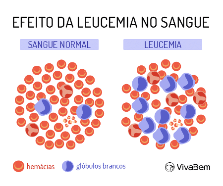

"A anemia tem tratamento. Não sofra em silêncio. Busque ajuda médica e melhore sua qualidade de vida."
O que é?
A anemia é uma condição em que o sangue não possui glóbulos vermelhos saudáveis ou quantidade adequada de hemoglobina, responsável pelo transporte de oxigênio. Isso resulta em sintomas como fadiga, fraqueza, palidez, falta de ar, tontura, batimento cardíaco irregular, dor no peito, extremidades frias e dores de cabeça.
exemplo anemia
Existem vários tipos de anemia, incluindo:
Anemia por deficiência de ferro: É o tipo mais comum, causado pela falta de ferro no organismo.
Anemia por deficiência de vitamina: Causada pela falta de vitamina B12 ou ácido fólico.
Anemia aplástica: Uma condição rara onde o corpo para de produzir glóbulos vermelhos suficientes.
Anemia hemolítica: Ocorre quando os glóbulos vermelhos são destruídos mais rapidamente do que podem ser produzidos.
Anemia falciforme: Uma forma hereditária de anemia onde os glóbulos vermelhos têm uma forma anormal e são destruídos mais rapidamente
sintomas:
Fadiga e fraqueza;
Palidez ou coloração amarelada da pele;
Falta de ar;
Tontura ou vertigem
Batimento cardíaco irregular ou acelerado
Dor no peito
Mãos e pés frios
Dores de cabeça
Diagnóstico da Anemia:
Histórico Médico e Exame Físico: Avaliação dos sintomas e histórico de saúde.
Hemograma Completo (HC): Medição de hemoglobina, hematócrito e contagem de glóbulos vermelhos.
Níveis de Ferro e Ferritina: Avaliação das reservas de ferro.
Níveis de Vitamina B12 e Ácido Fólico: Verificação de deficiências.
Reticulócitos: Contagem de glóbulos vermelhos imaturos.
Exames de Função da Medula Óssea: Em casos raros, para avaliar a produção de células sanguíneas.
Tratamento da Anemia:
Suplementos de Ferro: Para anemia por deficiência de ferro.
Suplementos de Vitamina B12: Para anemia por deficiência de vitamina B12.
Suplementos de Ácido Fólico: Para anemia por deficiência de ácido fólico.
Dieta Nutritiva: Inclusão de alimentos ricos em ferro, vitamina B12 e ácido fólico.
Medicamentos: Estimulação da produção de glóbulos vermelhos.
Tratamento de Doenças Subjacentes: Tratamento de condições que causam anemia.
Transfusão de Sangue: Em casos graves.
Tratamentos Específicos: Para tipos raros de anemia, como anemia aplástica, hemolítica e falciforme.
"A prevenção é o melhor remédio. Mantenha um estilo de vida saudável para evitar a anemia."
Entrevista
Entrevistada: Vera
1 - Você sabe algum sintoma de anemia
Fraquesa, tontura, dores de cabeça, batimento cardíaco acelerado.
"Sua ajuda pode transformar a vida de alguém com leucemia. Participe, doe, compartilhe e apoie a causa."
o que é Leucemia?
Leucemia é um câncer que afeta a medula óssea e o sistema linfático, começando nos glóbulos brancos. Existem vários tipos, todos comprometendo o sistema imunológico.

exemplo leucemia
Tipos de Leucemia
Leucemia Linfocítica Aguda (LLA): Acontece quando há um crescimento anormal e rápido de linfócitos imaturos.
Leucemia Mieloide Aguda (LMA): Caracterizada pela rápida proliferação de células mieloides imaturas.
Leucemia Linfocítica Crônica (LLC): Afeta linfócitos maduros e progride de forma mais lenta.
Leucemia Mieloide Crônica (LMC): Envolve o crescimento anormal de células mieloides maduras e progride lentamente.
Sintomas
Fadiga e fraqueza
Febre e infecções frequentes
Perda de peso sem motivo aparente
Sangramentos e hematomas fáceis
Dores nos ossos e articulações
Inchaço nos linfonodos, fígado ou baço
Diagnóstico e Tratamento
O diagnóstico geralmente é feito através de exames de sangue e biópsia de medula óssea. O tratamento pode incluir quimioterapia, radioterapia, terapia biológica, terapia direcionada e, em alguns casos, transplante de medula óssea.
A eficácia do tratamento varia conforme o tipo de leucemia, a idade do paciente e outros fatores individuais. É importante seguir as orientações médicas e realizar o acompanhamento regular para monitorar a resposta ao tratamento e ajustar conforme necessário.
"A leucemia é uma batalha difícil, mas não impossível de vencer. Juntos, somos mais fortes."
Entrevista
Entrevistada: Liliane
1 - Você conhece algum sintoma ?
Febre, fraquesa, fadiga e palidez.
2 - Você conhece alguém que tem leucemia ?
Não.
criadoras:
Luana Aparecida da Silva e Vitoria Santana da Silva.